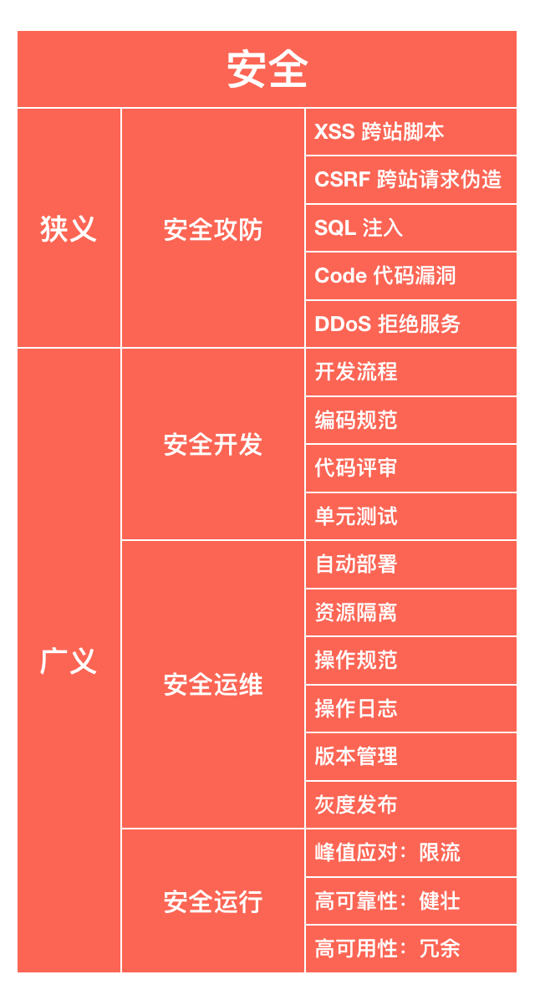
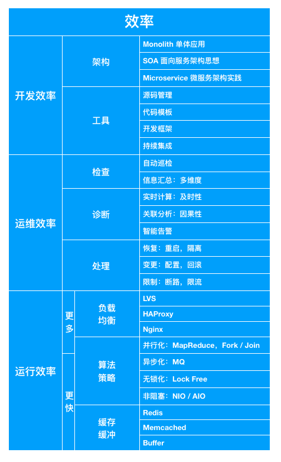

- 00 开篇词 程序行知：走在同样的路上，遇见自己的风景.md
- 01 初心：为什么成为一名程序员？.md
- 02 初惑：技术方向的选择.md
- 03 初程：带上一份技能地图.md
- 04 初感：别了校园，入了江湖.md
- 05 架构与实现：它们的连接与分界？.md
- 06 模式与框架：它们的关系与误区？.md
- 07 多维与视图：系统设计的思考维度与展现视图.md
- 08 代码与分类：工业级编程的代码分类与特征.md
- 09 粗放与精益：编程的两种思路与方式.md
- 10 炫技与克制：代码的两种味道与态度.md
- 11 三阶段进化：调试，编写与运行代码.md
- 12 Bug的空间属性：环境依赖与过敏反应.md
- 13 Bug的时间属性：周期特点与非规律性.md
- 14 Bug的反复出现：重蹈覆辙与吸取教训.md
- 15 根源：计划的愿景——仰望星空.md
- 16 方式：计划的方法——脚踏实地.md
- 17 检视：计划的可行——时间与承诺.md
- 18 评估：计划的收获——成本与收益.md
- 19 障碍：从计划到坚持，再到坚持不下去的时候.md
- 20 执行：从坚持到持续，再到形成自己的节奏.md
- 21 信息：过载与有效.md
- 22 领域：知识与体系.md
- 23 转化：能力与输出.md
- 24 并行：工作与学习.md
- 25 时间：塑造基石习惯（上）——感知与测量.md
- 26 时间：塑造基石习惯（下）——切割与构建.md
- 27 试试：一种“坏”习惯.md
- 28 提问：从技术到人生的习惯.md
- 29 偏好：个人习惯的局限与反思.md
- 30 写作：写字如编码.md
- 31 画图：一图胜千言.md
- 32 演讲：表达的技术.md
- 33 定义：阶梯与级别.md
- 34 晋升：评定与博弈.md
- 35 关系：学徒与导师.md
- 36 核心：安全与效率——工程技术的两个核心维度.md
- 37 过程：规模与协作——规模化的过程方法.md
- 38 思维：科学与系统——两类问题的两种思维解法.md
- 39 职业倦怠：如何面对？.md
- 40 局部最优：如何逃离？.md
- 41 沟通之痛：如何改变？.md
- 42 技术停滞：如何更新？.md
- 43 无法实现：困扰与反思.md
- 44 完成作品：理想与现实.md
- 45 代码评审：寄望与哀伤.md
- 46 人到中年：失业与恐惧.md
- 47 该不该去创业公司？.md
- 48 该不该接外包？.md
- 49 技术干货那么多，如何选？.md
- 50 技术分歧，如何决策？.md
- 51 技术债务，有意或无意的选择？.md
- 52 选择从众，还是唯一？.md
- 53 选择工作，还是生活？.md
- 54 侠客行：一技压身，天下行走.md
- 55 江湖路：刀剑相接，战场升级.md
- 56 御剑流：一击必杀，万剑归心.md
- 57 三维度：专业、展现与连接.md
- 58 三人行：前辈、平辈与后辈.md
- 59 三角色：程序员、技术主管与架构师.md
- 60 三视角：定位、自省与多维.md
- 61 工作之余，专业之外.md
- 62 跨越断层，突破边界.md
- 63 成长蓝图，进化跃迁.md
- 尾声 始于知，终于行.md
36 核心：安全与效率——工程技术的两个核心维度
在“修行：由术入道”模块的最后一个主题，我们聊聊工程，不是具体的工程的技术，而是抽象的工程之道。
做了很多年的工程，开发了各种各样的系统，写了无数的代码，说起这一切，我们都在谈些什么？
我们谈过程，从需求工程到开发流程，从编码规范到同行评审，从持续集成到自动部署，从敏捷开发到极限编程；我们谈架构，从企业级到互联网，从面向服务架构（SOA）到微服务架构（Microservice）；我们谈复杂性，从高并发到高性能，从高可用到高可靠，从大数据到大容量。
那么对于这一切，你感觉这里面的核心是什么？
核心
核心，意味着最重要的，一切复杂的工程技术方案都是围绕着它来运转。
在深入核心之前，我们先讲一个电力行业的故事。虽说电力项目我没做过，但电站大概的工作原理在中学物理课上就已经学过了，原理很简单。虽理论上是这么说，但现实中看到那些大规模的电站后，还是感觉很复杂的。
故事是这样的：记得有个给我们上课的主讲老师是个须发皆白的老先生，进门后掏出一堆零件放在讲台上。一盏酒精灯、一个小水壶、一个叶片、一个铜光闪闪的小电机、一个小灯泡。老先生往壶里倒了些水，点燃酒精灯，不一会儿水开了，从壶嘴里喷出了蒸汽，带动叶片旋转，然后小灯泡就亮了。
老先生说：“这就是电厂。如果烧的是煤炭，这就是燃煤电厂；如果烧的天然气，这就是燃气电厂；如果获得热能的方式是核裂变，这就是核电厂；如果带动叶片的能量来自从高处流向低处的水流，这就是水电厂。”
“你们或许会问：那我们看到的电站怎么这么复杂？答案其实很简单，电站需要复杂系统的目的：一是为了确保安全（Safety），二是为了提高效率（Efficiency）。安全与效率的平衡，是所有工程技术的核心。”
听完这个故事，我觉着所谓 “大道至简” 大概就是这样的感觉了。
安全
安全，之于信息工程技术领域，包括了 “狭义” 和 “广义” 两个方面的安全范畴。如下图所示：

工程 “安全“ 的狭义和广义分类
狭义的安全，就是传统信息安全领域的 “安全攻防” 范畴。比如，客户端的跨站脚本攻击（XSS）、服务端数据库的 SQL 注入、代码漏洞以及针对服务可用性的拒绝服务攻击（DDoS）等。这个方面的 “安全” 含义是信息技术行业独有的，但前面电站例子中指的 “安全” 更多是 “广义” 层面的。
在程序技术上的 “广义” 安全范畴，我划分了三个方面：
- 开发
- 运维
- 运行
安全开发，就是为了保障交付的程序代码是高质量、低 Bug 率、无漏洞的。从开发流程、编码规范到代码评审、单元测试等，都是为了保障开发过程中的 “安全”。
安全运维，就是为了保障程序系统在线上的变化过程中不出意外，无故障。但无故障是个理想状态，现实中总会有故障产生，当其发生时最好是对用户无感知或影响范围有限的。
通过自动部署来避免人为的粗心大意，资源隔离保障程序故障影响的局部化；当一定要有人参与操作时，操作规范和日志保证了操作的标准化和可追溯性；线上程序的版本化管理与灰度发布机制，保障了若有代码 Bug 出现时的影响局部化与快速恢复能力。
安全运行，就是为了应对 “峰值” 等极端或异常运行状态，提供高可靠和高可用的服务能力。
效率
效率，从程序系统的角度看，同样也是从 “开发”“运维” 和 “运行” 三个方面来考虑。如下图所示：

“效率”的划分
开发效率，可以从 “个体” 和 “群体” 两个方面来看。
个体，就是程序员个人了，其开发效率除了受自身代码设计与编写能力的影响，同时还要看其利用工具的水平。更好的源码管理工具与技巧可以避免无谓的冲突与混乱；代码模板与开发框架能大幅度提升代码产出效率；而持续集成工具体系则能有助于快速推进代码进入可测试状态。
群体，就是一个团队，其开发效率最大的限制经常是架构导致的。如果你在一个工程项目上写过几年代码后，多半会碰到这样一种场景，代码库越来越大，而功能越改越困难。明明感觉是一个小功能变化，也要改上好几天，再测上好几天，这通常都是架构的问题，导致了团队群体开发效率的下降。
以后端服务架构技术演进的变化为例，从单体应用到面向服务架构思想，再到如今已成主流的微服务架构实践，它最大的作用在于有利于大规模开发团队的并行化开发，从而提升了团队整体的效率。理想情况下，每个微服务的代码库都不大，变化锁闭在每个服务内部，不会影响其他服务。
微服务化一方面提升了整体的开发效率，但因为服务多了，部署就变复杂了，所以降低了部署的效率。但部署效率可以通过自动化的手段来得到弥补，而开发则没法自动化。另一方面，每个微服务都是一个独立的进程，从而在应用进程层面隔离了资源冲突，提升了程序运行的 “安全” 性。
运维效率，可以从 “检查”“诊断” 和 “处理” 三个方面来看。
一个运行的系统，是一个有生命力的系统，并有其生命周期。在其生命周期内，我们需要定期去做检查，以得到系统的 “生命体征” 的多维度信息数据汇总，以供后续的诊断分析。
运行系统的 “体征” 数据是在实时变化的，而且数据来源是多层次的，从底层的网络、操作系统、容器到运行平台（如：JVM）、服务框架与应用服务。当异常 “体征” 指标出现时，很难简单地判断到底哪里才是根本原因，这就需要关联的因果性分析来得出结论，最后智能地发出告警，而不是被告警所淹没。
准确地诊断之后，才能进行合适地处理。和治病不同，大部分的故障都可以通过常见的处理手段解决，极少存在所谓的 “不治之症”。而常见的线上处理手段有如下三类。
- 恢复：重启或隔离来清除故障、恢复服务；
- 变更：修改配置或回滚程序版本；
- 限制：故障断路或过载限流。
运行效率，关键就是提高程序的 “响应性”，若是服务还包括其 “吞吐量”。
程序运行的高效率，也即高响应、高吞吐能力，所有的优化手段都可以从下面两个维度来分类：
- 更多
- 更快
负载均衡器让更多的机器或进程参与服务，并行算法策略让更多的线程同步执行。异步化、无锁化和非阻塞的算法策略让程序执行得更快，缓存与缓冲让数据的读写更快。
有时在某些方面 “安全” 和 “效率” 之间是相互冲突的，但工程技术的艺术性就恰恰体现在这冲突中的平衡上。
打个比方，如果你的程序就跑在你开的车上，那么“安全” 特性会让你开得更放心，“效率” 特性会让你开得更带劲。
做了多年程序工程的你，是如何看待工程的核心本质的呢？欢迎留言，一起探讨。
© 2019 - 2023 Liangliang Lee. Powered by gin and hexo-theme-book.